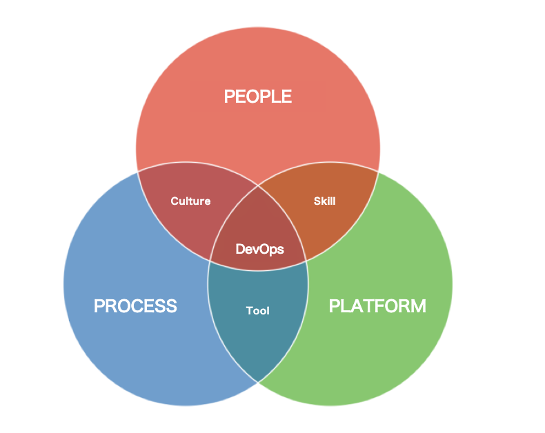

- 00 开篇词 从默默无闻到风靡全球，DevOps究竟有什么魔力？.md.html
- 01 DevOps的“定义”：DevOps究竟要解决什么问题？.md.html
- 02 DevOps的价值：数字化转型时代，DevOps是必选项？.md.html
- 03 DevOps的实施：到底是工具先行还是文化先行？.md.html
- 04 DevOps的衡量：你是否找到了DevOps的实施路线图？.md.html
- 05 价值流分析：关于DevOps转型，我们应该从何处入手？.md.html
- 06 转型之路：企业实施DevOps的常见路径和问题.md.html
- 07 业务敏捷：帮助DevOps快速落地的源动力.md.html
- 08 精益看板（上）：精益驱动的敏捷开发方法.md.html
- 09 精益看板（下）：精益驱动的敏捷开发方法.md.html
- 10 配置管理：最容易被忽视的DevOps工程实践基础.md.html
- 11 分支策略：让研发高效协作的关键要素.md.html
- 12 持续集成：你说的CI和我说的CI是一回事吗？.md.html
- 13 自动化测试：DevOps的阿克琉斯之踵.md.html
- 14 内建质量：丰田和亚马逊给我们的启示.md.html
- 15 技术债务：那些不可忽视的潜在问题.md.html
- 16 环境管理：一切皆代码是一种什么样的体验？.md.html
- 17 部署管理：低风险的部署发布策略.md.html
- 18 混沌工程：软件领域的反脆弱.md.html
- 19 正向度量：如何建立完整的DevOps度量体系？.md.html
- 20 持续改进：PDCA体系和持续改进的意义.md.html
- 21 开源还是自研：企业DevOps平台建设的三个阶段.md.html
- 22 产品设计之道：DevOps产品设计的五个层次.md.html
- 23 持续交付平台：现代流水线必备的十大特征（上）.md.html
- 24 持续交付平台：现代流水线必备的十大特征（下）.md.html
- 25 让数据说话：如何建设企业级数据度量平台？.md.html
- 26 平台产品研发：三个月完成千人规模的产品要怎么做？.md.html
- 27 巨人的肩膀：那些你不能忽视的开源工具.md.html
- 28 迈向云端：云原生应用时代的平台思考.md.html
- 29 向前一步：万人规模企业的DevOps实战转型案例（上）.md.html
- 30 向前一步：万人规模企业的DevOps实战转型案例（下）.md.html
- 期中总结 3个典型问题答疑及如何高效学习 (1).md.html
- 期中总结 3个典型问题答疑及如何高效学习.md.html
- 期末总结 在云时代，如何选择一款合适的流水线工具？.md.html
- 特别放送（一）成为DevOps工程师的必备技能（上）.md.html
- 特别放送（三）学习DevOps不得不了解的经典资料.md.html
- 特别放送（二）成为DevOps工程师的必备技能（下）.md.html
- 特别放送（五）关于DevOps组织和文化的那些趣事儿.md.html
- 特别放送（四）Jenkins产品经理是如何设计产品的？.md.html
- 结束语 持续改进，成就非凡！.md.html
- 捐赠
03 DevOps的实施：到底是工具先行还是文化先行？
你好，我是石雪峰。
当一家企业好不容易接纳了DevOps的思想，并下定决心开始实施的时候，总会面临这样一个两难的选择：工具和文化，到底应该哪个先行？
的确，在DevOps的理论体系之中，工具和文化分别占据了半壁江山。在跟别人讨论这个话题的时候，我们往往会划分为两个不同的“阵营”，争论不休，每一方都有自己的道理，难以说服彼此。在DevOps的世界中，工具和文化哪个先行的问题，就好比豆浆应该是甜的还是咸的一样，一直没有一个定论。
可是，对于很多刚刚接触DevOps的人来说，如果不把这个问题弄清楚，后续的DevOps实践之路难免会跑偏。所以无论如何，这碗豆浆我先干为敬，今天我们就先来聊聊这个话题。
DevOps工具
随着DevOps理念的深入人心，各种以DevOps命名的工具如雨后春笋般出现在我们身边，甚至有很多老牌工具，为了顺应DevOps时代的发展，主动将产品名称改为DevOps。最具代表性的，就是去年9月份微软研发协作平台VSTS（Visual Studio Team Services）正式更名为Azure DevOps，这也进一步地印证，DevOps已经成为了各类工具平台建设的核心理念。
在上一讲中，我提到高效率和高质量是DevOps的核心价值，而工具和自动化就是提升效率最直接的手段，让一切都自动化可以说是DevOps的行为准则。
一切软件交付过程中的手动环节，都是未来可以尝试进行优化的方向。即便在运维圈里面，ITIL（IT基础架构库)一直是运维赖以生存的基石，也并不妨碍自动化的理念逐步深入到ITIL流程之中，从而在受控的基础上不断优化流程流转效率。
另外，正因为所有人都认可自动化的价值，工具平台的引入和建设就成为了DevOps打动人的关键因素之一。
同时，现在业界的很多开源工具已经相当成熟，以Netflix、Amazon、Etsy等为代表的优秀公司也在不断将内部的工具平台进行对外开放，各方面的参考资料和使用案例比比皆是。
无论是单纯使用，还是基于这些工具进行二次开发，成本都已经没那么高了，一个稍微成熟点的小团队可以在很短的时间内完成一款工具的开发。以我之前所在的团队为例，从0开始组建到第一款产品落地推广，前后不过两个多月的时间，而且与业内的同类产品相比较，毫不逊色。
不过，这也带来一个副作用，那就是企业内部的工具平台泛滥，很多同质化的工具在完成从0到1的过程后就停滞不前，陷入重复的怪圈，显然也是一种资源浪费。
当然，对于工具决定论的支持者来说，这并不是什么大问题，因为引入工具就是DevOps的最佳实施路径。
有时候，当你问别人“你们公司的DevOps做得怎么样啦？”你可能会得到这样的回答：“我们的所有团队都已经开始使用Jenkins了。”听起来感觉怪怪的。如果只是使用了最新最强大的DevOps工具，就能实现软件交付效率的腾飞，那么世界500强的公司早就实现DevOps了。
很多公司引入了完整的敏捷项目管理工具，但是却以传统项目管理的方式来使用这套工具，效率跟以前相比并没有明显的提升。对于自研平台来说，也是同样的道理。如果仅仅是把线下的审批流程搬到线上执行，固然能提升一部分执行效率，但是对于企业期望的质变来说，却是相距甚远。
说到底，工具没法解决人的问题，这样一条看似取巧的路径，却没法解决企业的根本问题。这时候，就需要文化闪亮登场了。
DevOps文化
在谈论DevOps文化之前，我先跟你分享一个故事。
上世纪80年代，美国加州有一家汽车制造公司，叫作NUMMI。当时这家公司隶属于通用公司，但是由于劳资关系紧张，这家公司一直以来都是通用旗下效益最差的公司。员工整天上班喝酒，赌博，整个工厂乌烟瘴气，旷工率甚至一度达到了20%。通用公司忍无可忍，最后关闭了这家公司。
后来，日本丰田公司想在美国联合建厂，于是跟通用达成了合资协议。美国联合汽车工会（UAW）希望新公司可以重新雇佣之前遭到解雇的员工，通用公司本来不想接受，但是令人惊讶的是，丰田公司却同意了。因为他们认为，NUMMI工厂之前的情况更多是系统的原因，而不是人的原因。
接下来，丰田公司将新招募的员工送到日本进行培训。短短三个月后，整个公司的面貌焕然一新，半年后，一跃成为整个通用集团效益最好的公司。
由此可见，在不同的文化制度下，相同的人发挥出来的生产力也会有天壤之别。
类似的故事并非个例，曾经有一群美国专家到日本参观和学习生产流水线，他们发现了一件有趣的事情。
在美国公司的生产线里面，总有一个人拿着橡胶的锤子在敲打车门，目的是检查车门是否安装完好。但即便如此，车门的质量依然很差。可是，在日本公司的工厂里面，却没有这样的角色。
他们就好奇地问道：“你们如何保障车门没有问题呢？”日方的专家回复说：“我们在设计车门的时候，就已经保证它不会出问题了。”你看，同样是采用流水线技术的两家公司，结果却大不相同。
类比DevOps，如果在我们的软件交付过程中，始终依靠这个拿锤子的人来保障产品的质量，出了问题总是抱怨没有会使用锤子的优秀人才，或许这个流程本身就出了问题。
回到文化本身，良好的文化不仅可以让流程和工具发挥更大的作用，更重要的是，它能够诱发人们思考当前的流程和工具哪里是有问题的，从而引出更多有关流程和工具的优化需求，促使流程和工具向更加有力的支持业务发展的方向持续改进。
可是，企业内部的DevOps文化本身就是虚无缥缈的事情，你很难去量化团队的文化水平，进而改变企业的文化。盲目地空谈文化，对组织也是一种伤害。因为脱离实践，文化就会变成无根之水。当组织迟迟无法看到DevOps带来的实际收益时，就会丧失转型的热情和信心。
所以，我们需要先改变行为，再通过行为来改变文化。而改变行为最关键的，就是要建立一种有效的机制。就像我一直强调的那样，机制就是人们愿意做，而且做了有好处的事情。
回想之前提到的某金融公司的案例，如果他们的老板只是喊了句口号“我们要在年底完成DevOps试点落地”，那么年底即便项目成功，本质上也不会有什么改变。相反，他们在内部建立了一种机制，包括OKR指标的设定、关键指标达成后的激励、成立专项的工作小组、引入外部的咨询顾问，以及一套客观的评判标准，这一切都保证了团队走在正确的道路上。而承载这套客观标准的就是一套通用的度量平台，说到底，还是需要将规则内建于工具之中，并通过工具来指导实践。
这样一来，当团队通过DevOps获得了实实在在的改变，那么DevOps所倡导的职责共担、持续改进的文化自然也会生根发芽。
所以你看，DevOps中的文化和工具，本身就是一体两面，我们既不能盲目地奉行工具决定论，上来就大干快干地采购和建设工具，也不能盲目地空谈文化，在内部形成一种脱离实际的风气。
DevOps的3个支柱
对工具和文化的体系化认知，可以归纳到DevOps的3个支柱之中，即人（People）、流程（Process）和平台（Platform）。3个支柱之间两两组合，构成了我们实施DevOps的“正确姿势”，只强调其中一个维度的重要性，明显是很片面的。

人 + 流程 = 文化
在具体的流程之下，人会形成一套行为准则，而这套行为准则会潜移默化地影响软件交付效率和质量的方方面面。这些行为准则组合到一起，就构成了企业内部的文化。
一种正向的文化可以弥合流程和平台方面的缺失，推动二者的持续改进，同时可以让相同的流程和平台在不同的人手中产生迥异的效果。就好像《一代宗师》里面的那句经典台词：“真正的高手，比拼的不是武功，而是思想。”而指导DevOps落地发展的思想，就是DevOps的文化了。
举个例子，在谷歌SRE的实践中，研发交付的应用需要自运维一段时间，并且要在达到一定的质量指标之后才会交接给SRE进行运维。但是，为了避免出现“研发一走，运维背锅”的情况，他们还建立了“打回”的流程，也就是当SRE运维一段时间后，如果发现应用稳定性不达标，就会重新交还给开发自己负责维护，这样一来，研发就会主动地保障线上应用的质量。而且在这个过程，SRE也会给予技术和平台方面的支持，从而形成了责任共担和质量导向的文化。
类似的，有些公司设有线上安全点数的机制，在一定的额度范围内，允许团队出现问题，并且不追究责任。这就可以激励团队更加主动地完成交付活动，不必每一次都战战兢兢，生怕出错。通过流程和行为的改变，团队的文化也在慢慢地改进。
由此看来，虽然我们很难直接改变文化，但是却可以定义期望文化下的行为表现，并通过流程的改进来改变大家的行为，从而让文化得以生根发芽，茁壮成长。
流程 + 平台 = 工具
企业内部流程的标准化，是构成自动化的前提。试想一下，如果没有一套标准的规则，每一项工作都需要人介入进行判断和分析，那么结果势必会受到人的因素的影响，这样的话，又如何做到自动化呢？
而平台的最大意义，就是承载企业内部的标准化流程。当这些标准化流程被固化在平台之中时，所有人都能够按照一套规则沟通，沟通效率显然会大幅提升。
平台上固化的每一种流程，其实都是可以用来解决实际问题的工具。很多人分不清工具和平台的关系，好像只要引入或者开发了一个工具，都可以称之为平台，也正因为这样，企业内部的平台比比皆是。
实际上，平台除了有用户量、认可度、老板加持等因素之外，还会有3个显著特征。
- 吸附效应：平台会不断地吸收中小型的工具，逐渐成为一个能力集合体。
- 规模效应：平台的成本不会随着使用方的扩展而线性增加，能够实现规模化。
- 积木效应：平台具备基础通用共享能力，能够快速搭建新的业务实现。
简单来说，平台就是搭台子，工具来唱戏。平台提供场所，进行宣传，吸引用户，同时还能提供演出的道具，以及数据方面的分析。观众的喜好各不相同，但是平台将各种戏汇集在一起，就能满足大多数人的需求。如果平台把唱戏的事情做了，难以聚焦“台子”的质量，就离倒闭不远了。同样，如果唱戏的整天琢磨着建平台，那么戏本身的品质就难以不断精进。所以是做平台，还是做工具，无关好坏，只关乎选择。
平台 + 人 = 培训赋能
平台是标准化流程的载体，一方面可以规范和约束员工的行为，另一方面，通过平台赋能，所有人都能以相同的操作，获得相同的结果。这样一来，跨领域之间的交接和专家就被平台所取代，当一件事情不再依赖于个人的时候，等待的浪费就会大大降低，平台就成了组织内部的能力集合体。
但与此同时，当我们定义了期望达到的目标，并提供了平台工具，那么对人的培训就变得至关重要，因为只有这样，才能让工具平台发挥最大的效用。更加重要的是，通过最终的用户使用验证，可以发现大量的可改进空间，进一步推动平台能力的提升，从而带动组织整体的飞轮效应，加速组织的进化。
所以你看，文化、工具和培训作为DevOps建设的3个重心，折射出来的是对组织流程、平台和人的关注，三位一体，缺一不可。
最后，跟你分享一个关于美国第一资本的例子。他们最初在实施DevOps时，采用的是外包方式，修改一个很小的问题都需要走复杂的变更流程，需要几天的时间。后来，他们决定采用“开源为先”的策略，并且严格审查原本的商业采购流程。除此之外，他们还基于开源工具搭建自己的平台，并在公司内部进行跨领域角色的交叉培养，交付效率大幅提升，实现了从每天迭代一次到每天多次的线上部署。
总结
讲到这里，我们今天的专栏内容就到尾声了。在这一讲中，我跟你讨论了DevOps中的工具和文化的实际价值，以及潜在的问题和挑战，最终推导出DevOps的3个支柱，也就是人、流程和平台，这3个支柱缺一不可。只有通过人、流程和平台的有机结合，在文化、工具和人员培训赋能领域共同推进，才能实现DevOps的真正落地实施。
思考题
最后，给你留一个思考题：你们公司的哪些文化是非常吸引你的？这些文化对于DevOps的实施又有哪些帮助呢？
欢迎在留言区写下你的思考和答案，我们一起讨论，共同学习进步。如果你觉得这篇文章对你有所帮助，欢迎你把文章分享给你的朋友。
© 2019 - 2023 Liangliang Lee. Powered by gin and hexo-theme-book.